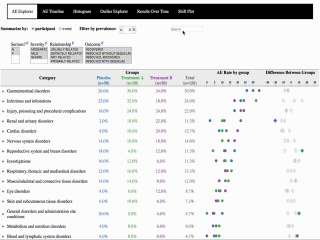

Overview
The Safety Explorer Suite consists 9 custom interactive graphics and 2 helper libraries. The 9 graphics libraries improve upon traditional static reports by adding simple user interface elements, including filters, dynamic searches, toggles for display options, and linked charts and listings. This page includes links to examples, the 9 libraries and detailed usage instructions providing an overview of how to get started with the tools.
Examples
The typical implementation of the Safety Explorer Suite looks like this:
Links to four examples showing all 9 interactive graphics are provided in the table below. Links to individual graphics are also provided in the libraries section below.
| Safety Explorer Suite Framework | A single page, like the one shown above, with all 9 interactive graphics created using the safety-explorer-suite framework. Data is only loaded once (instead of once per page). |
Default Example
Customized Example |
| R Packages | The safetygraphics R package can be used to easily generate these interactive data sets for any data set using R. |
safetygraphics Homepage
safetygraphics Example safetyexploreR (Archived) |
Libraries

Adverse Event Explorer
Interactive graphic giving an overview of adverse event (AE) rates by group
Code: Repository Documentation npm
Examples: Default Settings Custom Settings

Adverse Event Timeline
Interactive graphic showing the timeline of participant AEs
Code: Repository Documentation npm
Examples: Default Settings Custom Settings

Safety Outlier Explorer
Interactive graphic showing patterns of participant-level longitudinal safety markers
Code: Repository Documentation npm
Examples: Default Settings Custom Settings
Paneled Outlier Explorer
Paneled Interactive graphic showing patterns of participant-level longitudinal safety markers
Code: Repository Documentation npm
Example: Default Settings Default Settings

Safety Results Over Time
Interactive graphic showing population trends in longitudinal safety results
Code: Repository Documentation npm
Examples: Default Settings Custom Settings

Safety Histogram
Interactive graphic showing the distribution of safety markers
Code: Repository Documentation npm
Examples: Default Settings Custom Settings

Safety Shift Plot
Interactive graphic showing participant-level trends for longitudinal safety markers
Code: Repository Documentation npm
Examples: Default Settings Custom Settings
Safety eDISH
Interactive graphic for Evaluation of Drug-Induced Serious Hepatotoxicity (eDISH)
Code: Repository Documentation npm
Examples: Default Settings Custom Settings
Web Codebook
Interactive, graphical summary of every variable in a dataset
Code: Repository Documentation npm

Safety Explorer Suite
Helper library implementing all 9 graphics on a single page.
Code: Repository Documentation npm
Examples: Default Settings Custom Settings

safetygraphics - R package
R implementation of the interactive safety explorer graphics using htmlwidgets and shiny
Code: Repository Documentation
Example: Shiny App
Usage
There are several ways to use the Safety Explorer Suite:
-
Create a series of stand-alone web pages, and link them together as desired.
The Safety Explorer Suite charts can be used in modern web browers (IE9+, Chrome, Firefox, etc.), either by including the needed requirements in the global namespace or by using one of the workflows described here. See the examples for the individual libraries for more details.
-
Create a single webpage for mutiple charts using the safety-explorer-suite.
The safety-explorer-suite repository provides a simple framework for rendering multiple charts on a single page. See this example and the repository's wiki for details.
-
Use the safetygraphics library to initiative a Shiny application with multiple charts.
The safetygraphics library allows users to create charts via a simple shiny app, and export stand-alone webpages using the htmlwidgets framework. See the vignette for details.
Dependencies
The interactive graphics in the Safety Explorer Suite are built using d3.js (version 3) and webcharts. There are no other required dependencies. The charts work best in a recent version of a modern web browser like Chrome, Firefox or Safari and are not optimized for mobile.
The safetygraphics R package requires usage or R version 3.5 or later and works best using RStudio. The package has several dependencies including htmlwidgets, shiny, and several tidyverse pacakges. A full list of required packages is found on CRAN.